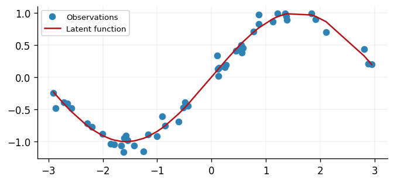
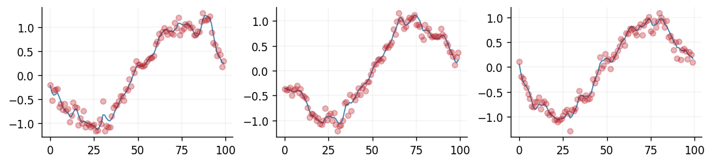
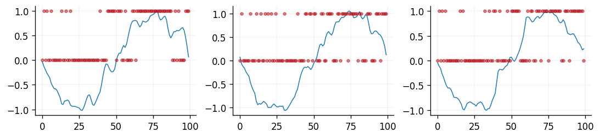

Likelihood guide
In this notebook, we will walk users through the process of creating a new likelihood in GPJax.
Background
In this section we'll provide a short introduction to likelihoods and why they are important. For users who are already familiar with likelihoods, feel free to skip to the next section, and for users who would like more information than is provided here, please see our introduction to Gaussian processes notebook.
What is a likelihood?
We adopt the notation of our introduction to Gaussian processes notebook where we have a Gaussian process (GP) \(f(\cdot)\sim\mathcal{GP}(m(\cdot), k(\cdot, \cdot))\) and a dataset \(\mathbf{y} = \{y_n\}_{n=1}^N\) observed at corresponding inputs \(\mathbf{x} = \{x_n\}_{n=1}^N\). The evaluation of \(f\) at \(\mathbf{x}\) is denoted by \(\mathbf{f} = \{f(x_n)\}_{n=1}^N\). The likelihood function of the GP is then given by $$ \begin{align} \label{eq:likelihood_fn} p(\mathbf{y}\mid \mathbf{f}) = \prod_{n=1}^N p(y_n\mid f(x_n))\,. \end{align} $$ Conceptually, this conditional distribution describes the probability of the observed data, conditional on the latent function values.
Why is the likelihood important?
Choosing the correct likelihood function when building a GP, or any Bayesian model for that matter, is crucial. The likelihood function encodes our assumptions about the data and the noise that we expect to observe. For example, if we are modelling air pollution, then we would not expect to observe negative values of pollution. In this case, we would choose a likelihood function that is only defined for positive values. Similarly, if our data is the proportion of people who voted for a particular political party, then we would expect to observe values between 0 and 1. In this case, we would choose a likelihood function that is only defined for values between 0 and 1.
Likelihoods in GPJax
In GPJax, all likelihoods are a subclass of the AbstractLikelihood class. This base
abstract class contains the three core methods that all likelihoods must implement:
predict, link_function, and expected_log_likelihood. We will discuss each of
these methods in the forthcoming sections, but first, we will show how to instantiate
a likelihood object. To do this, we'll need a dataset.
# Enable Float64 for more stable matrix inversions.
from jax import config
config.update("jax_enable_x64", True)
import gpjax as gpx
import jax
import jax.numpy as jnp
import jax.random as jr
import matplotlib.pyplot as plt
import tensorflow_probability.substrates.jax as tfp
from examples.utils import use_mpl_style
tfd = tfp.distributions
# set the default style for plotting
use_mpl_style()
cols = plt.rcParams["axes.prop_cycle"].by_key()["color"]
key = jr.key(42)
n = 50
x = jnp.sort(jr.uniform(key=key, shape=(n, 1), minval=-3.0, maxval=3.0), axis=0)
xtest = jnp.linspace(-3, 3, 100)[:, None]
f = lambda x: jnp.sin(x)
y = f(x) + 0.1 * jr.normal(key, shape=x.shape)
D = gpx.Dataset(x, y)
fig, ax = plt.subplots()
ax.plot(x, y, "o", label="Observations")
ax.plot(x, f(x), label="Latent function")
ax.legend()
<matplotlib.legend.Legend at 0x7fd1b88a6a40>

In this example, our observations have support \([-3, 3]\) and are generated from a sinusoidal function with Gaussian noise. As such, our response values \(\mathbf{y}\) range between \(-1\) and \(1\), subject to Gaussian noise. Due to this, a Gaussian likelihood is appropriate for this dataset as it allows for negative values.
As we see in \eqref{eq:likelihood_fn}, the likelihood function factorises over the
\(n\) observations. As such, we must provide this information to GPJax when
instantiating a likelihood object. We do this by specifying the num_datapoints
argument.
Gaussian(
obs_stddev=PositiveReal(
value=Array(1., dtype=float64, weak_type=True),
_tag='positive'
),
num_datapoints=50,
integrator=<gpjax.integrators.AnalyticalGaussianIntegrator object at 0x7fd1c0298040>
)
Likelihood parameters
Some likelihoods, such as the Gaussian likelihood, contain parameters that we seek to infer. In the case of the Gaussian likelihood, we have a single parameter \(\sigma^2\) that determines the observation noise. In GPJax, we can specify the value of \(\sigma\) when instantiating the likelihood object. If we do not specify a value, then the likelihood will be initialised with a default value. In the case of the Gaussian likelihood, the default value is \(1.0\). If we instead wanted to initialise the likelihood standard deviation with a value of \(0.5\), then we would do this as follows:
Gaussian(
obs_stddev=PositiveReal(
value=Array(0.5, dtype=float64, weak_type=True),
_tag='positive'
),
num_datapoints=50,
integrator=<gpjax.integrators.AnalyticalGaussianIntegrator object at 0x7fd1c0298040>
)
Prediction
The predict method of a likelihood object transforms the latent distribution of
the Gaussian process. In the case of a Gaussian likelihood, this simply applies the
observational noise value to the diagonal values of the covariance matrix. For other
likelihoods, this may be a more complex transformation. For example, the Bernoulli
likelihood transforms the latent distribution of the Gaussian process into a
distribution over binary values.
We visualise this below for the Gaussian likelihood function. In blue we can see samples of \(\mathbf{f}^{\star}\), whilst in red we see samples of \(\mathbf{y}^{\star}\).
kernel = gpx.kernels.Matern32()
meanf = gpx.mean_functions.Zero()
prior = gpx.gps.Prior(kernel=kernel, mean_function=meanf)
likelihood = gpx.likelihoods.Gaussian(num_datapoints=D.n, obs_stddev=0.1)
posterior = prior * likelihood
latent_dist = posterior.predict(xtest, D)
fig, axes = plt.subplots(ncols=3, nrows=1, figsize=(9, 2))
key, subkey = jr.split(key)
for ax in axes.ravel():
subkey, _ = jr.split(subkey)
ax.plot(
latent_dist.sample(sample_shape=(1,), seed=subkey).T,
lw=1,
color=cols[0],
label="Latent samples",
)
ax.plot(
likelihood.predict(latent_dist).sample(sample_shape=(1,), seed=subkey).T,
"o",
markersize=5,
alpha=0.3,
color=cols[1],
label="Predictive samples",
)

Similarly, for a Bernoulli likelihood function, the samples of \(y\) would be binary.
likelihood = gpx.likelihoods.Bernoulli(num_datapoints=D.n)
fig, axes = plt.subplots(ncols=3, nrows=1, figsize=(9, 2))
key, subkey = jr.split(key)
for ax in axes.ravel():
subkey, _ = jr.split(subkey)
ax.plot(
latent_dist.sample(sample_shape=(1,), seed=subkey).T,
lw=1,
color=cols[0],
label="Latent samples",
)
ax.plot(
likelihood.predict(latent_dist).sample(sample_shape=(1,), seed=subkey).T,
"o",
markersize=3,
alpha=0.5,
color=cols[1],
label="Predictive samples",
)

Link functions
In the above figure, we can see the latent samples being constrained to be either 0 or
1 when a Bernoulli likelihood is specified. This is achieved by the
inverse link_function \(\eta(\cdot)\) of the likelihood. The link function is a
deterministic function that maps the latent distribution of the Gaussian process to
the support of the likelihood function. For example, the link function of the
Bernoulli likelihood that is used in GPJax is the inverse probit function
$$
\eta(x) = 0.5\left(1 + \Phi\left(\frac{x}{\sqrt{2}}\right) * (1-2)\right)\,,
$$
where \(\Phi\) is the cumulative distribution function of the standard normal
distribution.
A table of commonly used link functions and their corresponding likelihood can be found here.
Expected log likelihood
The final method that is associated with a likelihood function in GPJax is the
expected log-likelihood. This term is evaluated in the
stochastic variational Gaussian process in the ELBO term. For a
variational approximation \(q(f)= \mathcal{N}(f\mid m, S)\), the ELBO can be written as
$$
\begin{align}
\label{eq:elbo}
\mathcal{L}(q) = \mathbb{E}{f\sim q(f)}\left[ p(\mathbf{y}\mid f)\right] - \mathrm{KL}\left(q(f)\mid\mid p(f)\right)\,.
\end{align}
$$
As both \(q(f)\) and \(p(f)\) are Gaussian distributions, the Kullback-Leibler term can
be analytically computed. However, the expectation term is not always so easy to
compute. Fortunately, the bound in \eqref{eq:elbo} can be decomposed as a sum of the
datapoints
$$
\begin{align}
\label{eq:elbo_decomp}
\mathcal{L}(q) = \sum{n=1}^N \mathbb{E}_{f\sim q(f)}\left[ p(y_n\mid f)\right] - \mathrm{KL}\left(q(f)\mid\mid p(f)\right)\,.
\end{align}
$$
This simplifies computation of the expectation as it is now a series of \(N\)
1-dimensional integrals. As such, GPJax by default uses quadrature to compute these
integrals. However, for some likelihoods, such as the Gaussian likelihood, the
expectation can be computed analytically. In these cases, we can supply an object
that inherits from AbstractIntegrator to the likelihood upon instantiation. To see
this, let us consider a Gaussian likelihood where we'll first define a variational
approximation to the posterior.
z = jnp.linspace(-3.0, 3.0, 10).reshape(-1, 1)
q = gpx.variational_families.VariationalGaussian(posterior=posterior, inducing_inputs=z)
def q_moments(x):
qx = q(x)
return qx.mean(), qx.variance()
mean, variance = jax.vmap(q_moments)(x[:, None])
Now that we have the variational mean and variational (co)variance, we can compute
the expected log-likelihood using the expected_log_likelihood method of the
likelihood object.
Array(-47.85484598, dtype=float64)
However, had we wanted to do this using quadrature, then we would have done the following:
lquad = gpx.likelihoods.Gaussian(
num_datapoints=D.n,
obs_stddev=jnp.array([0.1]),
integrator=gpx.integrators.GHQuadratureIntegrator(num_points=20),
)
However, this is not recommended for the Gaussian likelihood given that the expectation can be computed analytically.
System configuration
Author: Thomas Pinder
Last updated: Sat Aug 17 2024
Python implementation: CPython
Python version : 3.10.14
IPython version : 8.26.0
jax : 0.4.27
tensorflow_probability: 0.24.0
matplotlib : 3.9.2
gpjax : 0.9.0
Watermark: 2.4.3